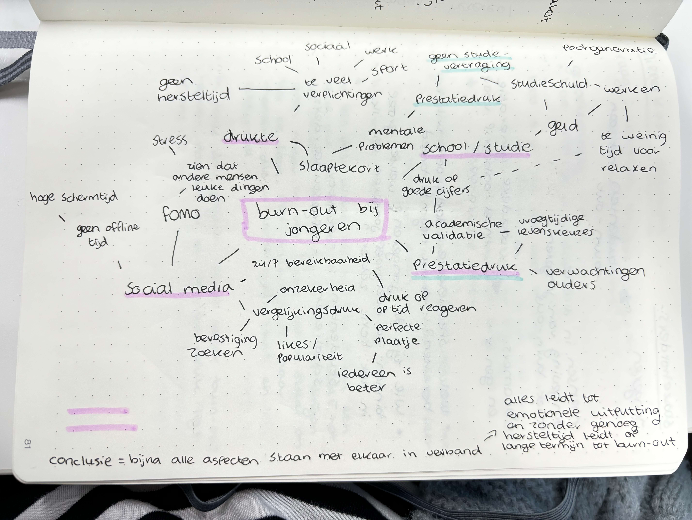
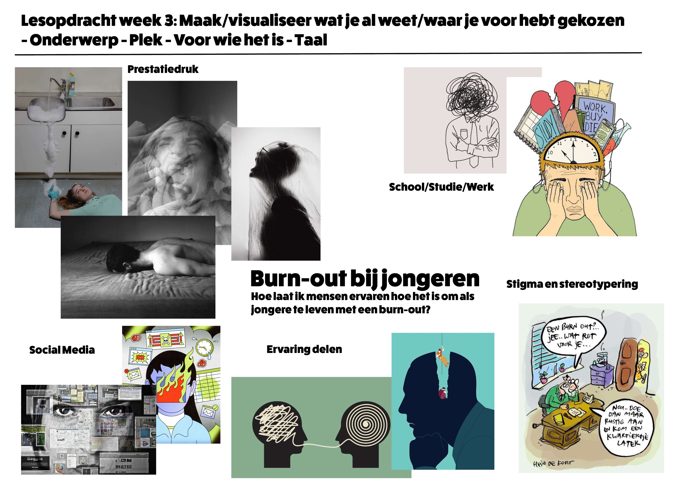

<html lang="en"></html>
<head>
    <meta charset="UTF-8">
    <meta name="viewport" content="width=device-width, initial-scale=1.0">
    <title>Portfolio Jamie Kramer</title>
    <link rel="stylesheet" href="../css/style.css">
    <link rel="preconnect" href="https://fonts.googleapis.com">
    <link rel="preconnect" href="https://fonts.gstatic.com" crossorigin>
    <link
        href="https://fonts.googleapis.com/css2?family=Pixelify+Sans:wght@400..700&family=Reddit+Sans+Condensed:wght@200..900&display=swap"
        rel="stylesheet">

        <style>
            * {
        font-family: "Reddit Sans Condensed", sans-serif;
    
        margin: 0;
        padding: 0;
        box-sizing: border-box;
    
        
    }
    
    p {
        font-size: 20px;
    }
    body {
        background-color: #232323;
        
    }
    
    section {
        padding-left: 300px;
    }
    
    nav,
    a {
        border: none;
        margin: 0;
        padding: none;
    }
    
    
    nav {
        background-color: #3F3F3F;
        height: 75px;
        display: flex;
        justify-content: space-between;
        width: 100%;
        align-items: center;
    
    }
        </style>
</head>
<body>
    <nav>
        <a href="../index.html" class="logoIcon">
            <p>TERUG NAAR HOME</p>
        </a>
    </nav>

    <section>
        <div style="width: 100%; height: 100%; position: relative; background: #232323">
            <div style="width: 516px; height: 72px; left: 34px; top: 53px; position: absolute; color: white; font-size: 36px; font-family: Avenir Next Condensed; font-weight: 700; word-wrap: break-word">BRAINSTORM </div>

            <div style="position: absolute; flex-direction: column; justify-content: center; align-items: center; display: inline-flex">
            </div>
            
            
         

            

            <div style="width: 491px; height: 252px; left: 38px; top: 508px; position: absolute; color: white; font-size: 25px; font-family: Avenir Next Condensed; font-weight: 400; word-wrap: break-word">Om voor mezelf duidelijk te hebben waar ik aan het begin van mijn onderzoek aan denk/al denk te weten over burn-out bij jongeren heb ik een mind-map gemaakt over het thema. Ik heb vooral dingen opgeschreven waarvan ik denk dat het oorzaken kunnen zijn waardoor jongeren burn-outs krijgen. </div>

            <div style="width: 536px; height: 251px; left: 645px; top: 501px; position: absolute; color: white; font-size: 25px; font-family: Avenir Next Condensed; font-weight: 400; word-wrap: break-word">Ik heb een moodboard gemaakt waarin ik visualeer wat mijn beeld is bij burn-out en wat mijn doel is.</div>

        </div>
    </section>
</body>
</html>